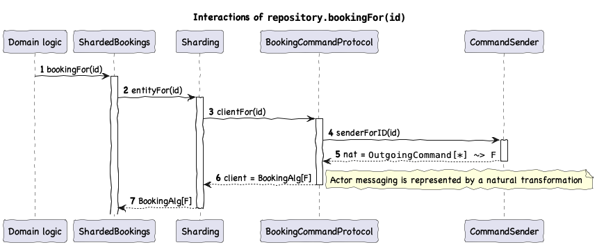
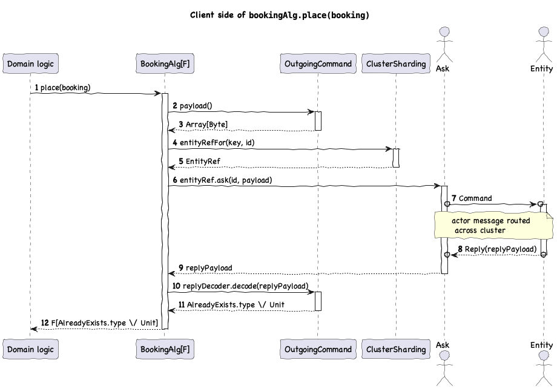

Example app
Endless example application is a small API for managing imaginary bookings for passenger trips from some origin to some destination, as well as tracking positions and speeds of vehicles. It can be found in endless-example and can be run directly: sbt run.
API
It has a simple CRUD API for bookings and vehicles:
source HttpRoutes
.of[IO] {
case req @ POST -> Root / "booking" => postBooking(bookingRepository, req)
case GET -> Root / "booking" / UUIDVar(id) => getBooking(bookingRepository, id)
case req @ PATCH -> Root / "booking" / UUIDVar(id) =>
patchBooking(bookingRepository, req, id)
case POST -> Root / "booking" / UUIDVar(id) / "cancel" =>
cancelBooking(bookingRepository, id)
case GET -> Root / "vehicle" / UUIDVar(id) / "speed" =>
getVehicleSpeed(vehicleRepository, id)
case GET -> Root / "vehicle" / UUIDVar(id) / "position" =>
getVehiclePosition(vehicleRepository, id)
case GET -> Root / "vehicle" / UUIDVar(id) / "recoveryCount" =>
getVehicleRecoveryCount(vehicleRepository, id)
case req @ POST -> Root / "vehicle" / UUIDVar(id) / "speed" =>
setVehicleSpeed(vehicleRepository, id, req)
case req @ POST -> Root / "vehicle" / UUIDVar(id) / "position" =>
setVehiclePosition(vehicleRepository, id, req)
case GET -> Root / "health" =>
isUp.flatMap {
case true => Ok("OK")
case false => ServiceUnavailable("Cluster member is down")
}
}
.orNotFound
)
Scaffolding
The application is assembled via calls to deployRepository (for bookings) and deployDurableEntity (for vehicles) (see runtime for more details)
Akka and Pekko runtimes essentially have the same API, so we’ll use Pekko for the example:
sourceResource
.eval(Slf4jLogger.create[IO])
.flatMap { implicit logger: Logger[IO] =>
PekkoCluster.managedResource[IO](actorSystem).flatMap {
implicit cluster: PekkoCluster[IO] =>
implicit val eventSourcingDeploymentParameters
: PekkoDeploymentParameters[IO, Booking, BookingEvent] =
PekkoDeploymentParameters[IO, Booking, BookingEvent](
customizeBehavior = (_, behavior) =>
behavior.eventAdapter(
new EventAdapter[
BookingEvent,
endless.example.proto.booking.events.BookingEvent
] {
def toJournal(
e: BookingEvent
): endless.example.proto.booking.events.BookingEvent =
eventAdapter.toJournal(e)
def manifest(event: BookingEvent): String = event.getClass.getName
def fromJournal(
p: endless.example.proto.booking.events.BookingEvent,
manifest: String
): EventSeq[BookingEvent] = EventSeq.single(eventAdapter.fromJournal(p))
}
)
)
implicit val durableDeploymentParameters
: PekkoDurableDeploymentParameters[IO, Vehicle] =
PekkoDurableDeploymentParameters[IO, Vehicle](
customizeBehavior = (_, behavior) =>
behavior.snapshotAdapter(new SnapshotAdapter[Option[Vehicle]] {
def toJournal(state: Option[Vehicle]): Any = stateAdapter.toJournal(state)
def fromJournal(from: Any): Option[Vehicle] = stateAdapter.fromJournal(from)
})
)
Resource
.both(
deployRepository[
IO,
BookingID,
Booking,
BookingEvent,
BookingAlg,
BookingsAlg
](
RepositoryInterpreter.lift(ShardedBookings(_)),
BehaviorInterpreter.lift(BookingEntityBehavior(_)),
SideEffectInterpreter.lift { case (_, _) => new BookingSideEffect() }
),
deployDurableRepository[IO, VehicleID, Vehicle, VehicleAlg, VehiclesAlg](
RepositoryInterpreter.lift(ShardedVehicles(_)),
DurableBehaviorInterpreter.lift(VehicleEntityBehavior(_)),
SideEffectInterpreter.lift { case (_, _) => new VehicleSideEffect() }
)
)
.flatMap { case (bookingDeployment, vehicleDeployment) =>
HttpServer(
port,
bookingDeployment.repository,
vehicleDeployment.repository,
cluster.isMemberUp
)
}
}
}
Algebras
You might have spotted the two algebra types in the snippet above:
Repository
sourcetrait BookingsAlg[F[_]] {
def bookingFor(bookingID: BookingID): BookingAlg[F]
}
Here’s the sequence of operations happening behind the scenes when retrieving an instance of entity algebra:
Entity
sourcetrait BookingAlg[F[_]] {
def place(
bookingID: BookingID,
time: Instant,
passengerCount: Int,
origin: LatLon,
destination: LatLon
): F[BookingAlreadyExists \/ Unit]
def get: F[BookingUnknown.type \/ Booking]
def changeOrigin(newOrigin: LatLon): F[BookingUnknown.type \/ Unit]
def changeDestination(newDestination: LatLon): F[BookingUnknown.type \/ Unit]
def changeOriginAndDestination(
newOrigin: LatLon,
newDestination: LatLon
): F[BookingUnknown.type \/ Unit]
def cancel: F[CancelError \/ Unit]
def notifyCapacity(isAvailable: Boolean): F[BookingUnknown.type \/ Unit]
}
Implementations
Implementation of the repository algebra is trivial using Sharding instance (injected by deployRepository):
sourcefinal case class ShardedBookings[F[_]: Monad](sharding: Sharding[F, BookingID, BookingAlg])
extends BookingsAlg[F] {
def bookingFor(bookingID: BookingID): BookingAlg[F] = sharding.entityFor(bookingID)
}
Implementation of behavior algebra is done using the Entity typeclass instance (also injected by deployRepository):
sourcefinal case class BookingEntityBehavior[F[_]: Logger: Clock](
entity: Entity[F, Booking, BookingEvent]
) extends BookingAlg[F] {
import entity.*
def place(
bookingID: BookingID,
time: Instant,
passengerCount: Int,
origin: LatLon,
destination: LatLon
): F[BookingAlreadyExists \/ Unit] =
ifUnknownF(
Logger[F].info(show"Creating booking with ID $bookingID") >> write(
BookingPlaced(bookingID, time, origin, destination, passengerCount)
)
)(_ => BookingAlreadyExists(bookingID))
def get: F[BookingUnknown.type \/ Booking] = ifKnown(identity)(BookingUnknown)
def changeOrigin(newOrigin: LatLon): F[BookingUnknown.type \/ Unit] =
ifKnownF(booking =>
if (booking.origin =!= newOrigin) entity.write(OriginChanged(newOrigin)) else ().pure
)(BookingUnknown)
def changeDestination(newDestination: LatLon): F[BookingUnknown.type \/ Unit] =
ifKnownF(booking =>
if (booking.destination =!= newDestination) entity.write(DestinationChanged(newDestination))
else ().pure
)(BookingUnknown)
def changeOriginAndDestination(
newOrigin: LatLon,
newDestination: LatLon
): F[BookingUnknown.type \/ Unit] = changeOrigin(newOrigin) >> changeDestination(newDestination)
def cancel: F[CancelError \/ Unit] =
ifKnownT[CancelError, Unit](booking =>
booking.status match {
case Status.Accepted | Status.Pending =>
EitherT.liftF(
(Clock[F].realTimeInstant >>= (timestamp =>
Logger[F]
.info(show"Cancelling booking with ID ${booking.id} at ${timestamp.toString}")
)) >> entity.write(BookingCancelled)
)
case Status.Cancelled => EitherT.pure(())
case Status.Rejected => EitherT.leftT[F, Unit](BookingAlg.BookingWasRejected(booking.id))
}
)(
BookingUnknown
)
def notifyCapacity(isAvailable: Boolean): F[BookingAlg.BookingUnknown.type \/ Unit] =
ifKnownF(_.status match {
case Status.Pending =>
if (isAvailable) entity.write(BookingAccepted) else entity.write(BookingRejected)
case _ => ().pure
})(
BookingUnknown
)
}
Event handling
In this simple example, events essentially set fields in the state:
sourceclass BookingEventApplier extends EventApplier[Booking, BookingEvent] {
def apply(state: Option[Booking], event: BookingEvent): String \/ Option[Booking] =
(event match {
case BookingPlaced(bookingID, time, origin, destination, passengerCount) =>
state
.toLeft(Booking(bookingID, time, origin, destination, passengerCount))
.leftMap(_ => "Booking already exists")
case OriginChanged(newOrigin) =>
state
.toRight("Attempt to change unknown booking")
.map(_.copy(origin = newOrigin))
case DestinationChanged(newDestination) =>
state
.toRight("Attempt to change unknown booking")
.map(_.copy(destination = newDestination))
case BookingAccepted =>
state
.toRight("Attempt to accept unknown booking")
.map(_.copy(status = Booking.Status.Accepted))
case BookingRejected =>
state
.toRight("Attempt to reject unknown booking")
.map(_.copy(status = Booking.Status.Rejected))
case BookingCancelled =>
state
.toRight("Attempt to cancel unknown booking")
.map(_.copy(status = Booking.Status.Cancelled))
}).map(Option(_))
}
Protocol
Command and reply encoding/decoding on client and server side is implemented with a subclass of CommandProtocol, in this case ProtobufCommandProtocol as we’ll be using protobuf. On the client side, we translate invocations into instances of OutgoingCommand and make use of the sendCommand helper function:
sourceclass BookingCommandProtocol extends ProtobufCommandProtocol[BookingID, BookingAlg] {
override def clientFor[F[_]](
id: BookingID
)(implicit sender: CommandSender[F, BookingID]): BookingAlg[F] =
new BookingAlg[F] {
def place(
bookingID: BookingID,
time: Instant,
passengerCount: Int,
origin: LatLon,
destination: LatLon
): F[BookingAlreadyExists \/ Unit] =
sendCommand[F, BookingCommand, replies.PlaceBookingReply, BookingAlreadyExists \/ Unit](
id,
BookingCommand.of(
Command.PlaceBookingV1(
PlaceBookingV1(
proto.BookingID(bookingID.show),
Timestamp.of(time.getEpochSecond, time.getNano),
passengerCount,
proto.LatLonV1(origin.lat, origin.lon),
proto.LatLonV1(destination.lat, destination.lon)
)
)
),
{
case replies
.PlaceBookingReply(replies.PlaceBookingReply.Reply.AlreadyExists(booking), _) =>
Left(BookingAlreadyExists(BookingID(UUID.fromString(booking.bookingId.value))))
case replies.PlaceBookingReply(replies.PlaceBookingReply.Reply.Unit(_), _) => Right(())
case replies.PlaceBookingReply(replies.PlaceBookingReply.Reply.Empty, _) =>
throw new UnexpectedReplyException
}
)
// ...
On the server side, we decode instances of IncomingCommand and make use of handleCommand to trigger relevant entity logic and encode the reply:
sourceoverride def server[F[_]]: Decoder[IncomingCommand[F, BookingAlg]] =
ProtobufDecoder[BookingCommand].map(_.command match {
case Command.Empty => throw new UnexpectedCommandException
case Command.PlaceBookingV1(
PlaceBookingV1(bookingID, time, passengerCount, origin, destination, _)
) =>
handleCommand[F, replies.PlaceBookingReply, BookingAlreadyExists \/ Unit](
_.place(
BookingID(UUID.fromString(bookingID.value)),
Instant.ofEpochSecond(time.seconds, time.nanos),
passengerCount,
LatLon(origin.lat, origin.lon),
LatLon(destination.lat, destination.lon)
),
{
case Left(bookingAlreadyExists) =>
replies.PlaceBookingReply(
replies.PlaceBookingReply.Reply.AlreadyExists(
replies.BookingAlreadyExistsV1(
proto.BookingID(bookingAlreadyExists.bookingID.show)
)
)
)
case Right(_) =>
replies.PlaceBookingReply(replies.PlaceBookingReply.Reply.Unit(UnitReply()))
}
)
Here’s an illustration of the chain of interactions taking place when placing a booking, both from the client and the server side:
Side-effects
We describe the availability process as well as entity passivation using Effector:
sourceclass BookingSideEffect[F[_]: Logger: Monad]()(implicit
availabilityAlg: AvailabilityAlg[F]
) extends SideEffect[F, Booking, BookingAlg] {
def apply(trigger: Trigger, effector: Effector[F, Booking, BookingAlg]): F[Unit] = {
import effector.*
val availabilityProcess: Booking => F[Unit] = booking =>
(booking.status, trigger) match {
case (Status.Pending, Trigger.AfterRecovery | Trigger.AfterPersistence) =>
(availabilityAlg.isCapacityAvailable(
booking.time,
booking.passengerCount
) >>= self.notifyCapacity).void
case _ => ().pure
}
val handlePassivation: Booking => F[Unit] = {
_.status match {
case Status.Pending => Applicative[F].unit
case Status.Accepted => enablePassivation(passivationDelay)
case Status.Rejected => enablePassivation()
case Status.Cancelled => enablePassivation()
}
}
ifKnown(booking => Logger[F].info(show"State is now $booking")) >> ifKnown(
availabilityProcess
) >> ifKnown(handlePassivation)
}
private val passivationDelay = 1.hour
}
Testing
Unit testing for entity algebra implementation, event handling and effector benefits from to the parametric nature of F:
sourceclass BookingEntityBehaviorSuite
extends munit.CatsEffectSuite
with munit.ScalaCheckEffectSuite
with Generators {
implicit private val logger: TestingLogger[IO] = TestingLogger.impl[IO]()
private val bookingAlg = BookingEntityBehavior(EntityT.instance[IO, Booking, BookingEvent])
private implicit val eventApplier: BookingEventApplier = new BookingEventApplier
test("place booking") {
forAllF { (booking: Booking) =>
bookingAlg
.place(
booking.id,
booking.time,
booking.passengerCount,
booking.origin,
booking.destination
)
.run(None)
.map {
case Right((events, _)) =>
assertEquals(
events,
Chain(
BookingPlaced(
booking.id,
booking.time,
booking.origin,
booking.destination,
booking.passengerCount
)
)
)
case Left(error) => fail(error)
}
.flatMap(_ => assertIOBoolean(logger.logged.map(_.nonEmpty)))
}
}
test("change origin and destination") {
forAllF { (booking: Booking, newOrigin: LatLon, newDestination: LatLon) =>
bookingAlg
.changeOriginAndDestination(newOrigin, newDestination)
.run(Some(booking))
.map {
case Right((events, _)) =>
assertEquals(
events,
Chain[BookingEvent](OriginChanged(newOrigin), DestinationChanged(newDestination))
)
case _ => fail("unexpected")
}
}
}
sourceclass BookingEventApplierSuite extends munit.ScalaCheckSuite with Generators {
property("booking placed when unknown") {
forAll { (booking: Booking) =>
val fold = new BookingEventApplier()(
None,
BookingPlaced(
booking.id,
booking.time,
booking.origin,
booking.destination,
booking.passengerCount
)
)
assertEquals(fold, Right(Some(booking)))
}
}
property("booking placed when known") {
forAll { (booking: Booking) =>
val fold = new BookingEventApplier()(
Some(booking),
BookingPlaced(
booking.id,
booking.time,
booking.origin,
booking.destination,
booking.passengerCount
)
)
assert(fold.isLeft)
}
}
property("origin changed when known") {
forAll { (booking: Booking, newOrigin: LatLon) =>
val fold = new BookingEventApplier()(Some(booking), OriginChanged(newOrigin))
assertEquals(fold.toOption.flatMap(_.map(_.origin)), Option(newOrigin))
}
}
property("origin changed when unknown") {
forAll { (newOrigin: LatLon) =>
val fold = new BookingEventApplier()(None, OriginChanged(newOrigin))
assert(fold.isLeft)
}
}
property("destination changed when known") {
forAll { (booking: Booking, newDestination: LatLon) =>
val fold = new BookingEventApplier()(Some(booking), DestinationChanged(newDestination))
assertEquals(fold.toOption.flatMap(_.map(_.destination)), Option(newDestination))
}
}
property("destination changed when unknown") {
forAll { (newDestination: LatLon) =>
val fold = new BookingEventApplier()(None, DestinationChanged(newDestination))
assert(fold.isLeft)
}
}
property("booking accepted when known") {
forAll { (booking: Booking) =>
val fold = new BookingEventApplier()(Some(booking), BookingAccepted)
assertEquals(fold.toOption.flatMap(_.map(_.status)), Option(Booking.Status.Accepted))
}
}
test("booking accepted when unknown") {
val fold = new BookingEventApplier()(None, BookingAccepted)
assert(fold.isLeft)
}
property("booking rejected when known") {
forAll { (booking: Booking) =>
val fold = new BookingEventApplier()(Some(booking), BookingRejected)
assertEquals(fold.toOption.flatMap(_.map(_.status)), Option(Booking.Status.Rejected))
}
}
test("booking rejected when unknown") {
val fold = new BookingEventApplier()(None, BookingRejected)
assert(fold.isLeft)
}
property("booking cancelled when known") {
forAll { (booking: Booking) =>
val fold = new BookingEventApplier()(Some(booking), BookingCancelled)
assertEquals(fold.toOption.flatMap(_.map(_.status)), Option(Booking.Status.Cancelled))
}
}
test("booking cancelled when unknown") {
val fold = new BookingEventApplier()(None, BookingCancelled)
assert(fold.isLeft)
}
}
sourceclass BookingSideEffectSuite
extends munit.CatsEffectSuite
with munit.ScalaCheckEffectSuite
with Generators {
implicit private val logger: TestingLogger[IO] = TestingLogger.impl[IO]()
implicit private def availabilityAlg: AvailabilityAlg[IO] = (_: Instant, _: Int) => IO(true)
test("some state generates logs after persistence") {
forAllF { (booking: Booking) =>
val acceptedBooking = booking.copy(status = Booking.Status.Accepted)
for {
effector <- Effector.apply[IO, Booking, BookingAlg](
new SelfEntity {},
Some(acceptedBooking)
)
_ <- new BookingSideEffect().apply(Trigger.AfterPersistence, effector)
_ <- assertIO(logger.logged.map(_.map(_.message).last), show"State is now $acceptedBooking")
} yield ()
}
}
test("some state passivates after one hour") {
forAllF { (booking: Booking, trigger: Trigger) =>
for {
effector <- Effector.apply[IO, Booking, BookingAlg](
new SelfEntity {},
Some(booking.copy(status = Booking.Status.Accepted))
)
_ <- new BookingSideEffect().apply(trigger, effector)
_ <- assertIO(effector.passivationState, Effector.PassivationState.After(1.hour))
} yield ()
}
}
test("passivates immediately when cancelled") {
forAllF { (booking: Booking, trigger: Trigger) =>
for {
effector <- Effector.apply[IO, Booking, BookingAlg](
new SelfEntity {},
Some(booking.copy(status = Booking.Status.Cancelled))
)
_ <- new BookingSideEffect().apply(trigger, effector)
_ <- assertIO(effector.passivationState, PassivationState.After(Duration.Zero))
} yield ()
}
}
test("notifies availability when pending and does not passivate") {
forAllF { (booking: Booking) =>
for {
effector <- Effector.apply[IO, Booking, BookingAlg](
new SelfEntity {
override def notifyCapacity(
isAvailable: Boolean
): IO[BookingAlg.BookingUnknown.type \/ Unit] = {
assert(isAvailable)
IO.pure(().asRight)
}
},
Some(booking.copy(status = Booking.Status.Pending))
)
_ <- new BookingSideEffect().apply(Trigger.AfterPersistence, effector)
} yield ()
}
}
trait SelfEntity extends BookingAlg[IO] {
lazy val raiseError = IO.raiseError(new RuntimeException("should not be called"))
override def place(
bookingID: Booking.BookingID,
time: Instant,
passengerCount: Int,
origin: LatLon,
destination: LatLon
): IO[BookingAlg.BookingAlreadyExists \/ Unit] = raiseError
override def get: IO[BookingAlg.BookingUnknown.type \/ Booking] = raiseError
override def changeOrigin(newOrigin: LatLon): IO[BookingAlg.BookingUnknown.type \/ Unit] =
raiseError
override def changeDestination(
newDestination: LatLon
): IO[BookingAlg.BookingUnknown.type \/ Unit] = raiseError
override def changeOriginAndDestination(
newOrigin: LatLon,
newDestination: LatLon
): IO[BookingAlg.BookingUnknown.type \/ Unit] = raiseError
override def cancel: IO[BookingAlg.CancelError \/ Unit] = raiseError
override def notifyCapacity(isAvailable: Boolean): IO[BookingAlg.BookingUnknown.type \/ Unit] =
raiseError
}
}
Command protocol can be also be covered in isolation with synchronous round-trip tests:
sourceclass BookingCommandProtocolSuite extends munit.ScalaCheckSuite with Generators {
test("place booking") {
forAll { (booking: Booking, reply: BookingAlg.BookingAlreadyExists \/ Unit) =>
implicit val sender: CommandSender[Id, Booking.BookingID] = CommandSender.local(
protocol,
new TestBookingAlg {
override def place(
bookingID: Booking.BookingID,
time: Instant,
passengerCount: Int,
origin: LatLon,
destination: LatLon
): Id[BookingAlg.BookingAlreadyExists \/ Unit] = reply
}
)
val actualReply = protocol
.clientFor(booking.id)
.place(
booking.id,
booking.time,
booking.passengerCount,
booking.origin,
booking.destination
)
assertEquals(actualReply, reply)
}
}
Component and integration tests using Akka or Pekko testkits are also advisable and work as usual, see PekkoExampleAppSuite.